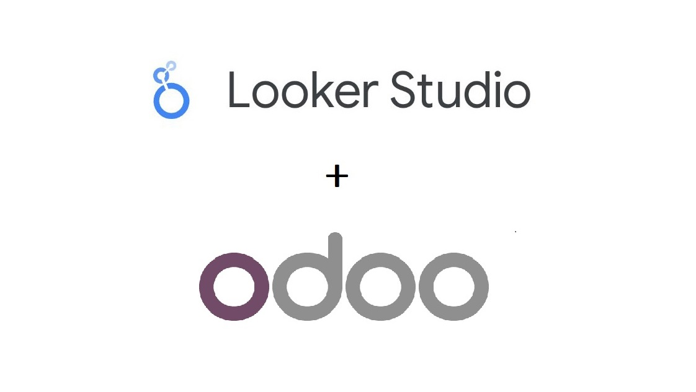

OR
Make the Odoo Looker Studio data integration smooth and fast
Techneith Odoo Looker Studio Connector is the only direct way to integrate your Odoo data smoothly, quickly, and safely. Through this module you don't require any third-party tool or database, just install it, connect with Odoo and you are done!

You can buy this module for once from our website at https://techneith.com/products/odoo-looker-studio/

Odoo Looker Studio Connector makes the data extraction process easier and reliable. Export and integrate your dataset to Google Looker Studio directly and save time!

With Looker Studio, users can upscale the calculations, otherwise, Odoo alone can only counter easy calculations and transformations but not advanced ones.

There is no denying the fact that Google Looker Studio is capable of providing valuable and powerful insights. It performs great data visualization through interactive dashboards to view and analyze the data.

Deeper and more insightful analysis and reporting are the keys to delivering the results you long for! With Looker Studio you get detailed reports of your Odoo data, also you can easily operate and manage the data.
Security and privacy are the priorities of Techneith's modules. Thus, Odoo Looker Studio Connector knows how to deal with sensitive data and takes measures to protect data, applications, and other information.
View all tables from Odoo in Google Looker
List of all tables can be viewed here

Evaluate and analyze useful information using looker 'create report' feature
Odoo is widely used and known among online businesses, software developers, and programmers. After all, it is the best ERP solution for managing complex workflows like E-commerce, Accounting, Sales management, Project management, CRM, Billing, Invoicing, Warehouse, and more in a single place. Millions of users believe it is effective and one of the crucial tools for any business, company or organization.
Google Looker Studio is easy to use and also turns your complex data into understandable visualization through dynamic dashboards. It generates fully customized analytical reports, charts, tables, and dashboards to make it comprehensible. Most importantly, by using its drill-down capabilities , it gives deeper and well-defined insights